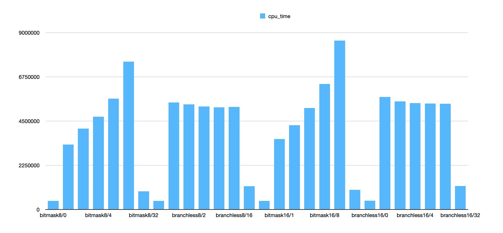
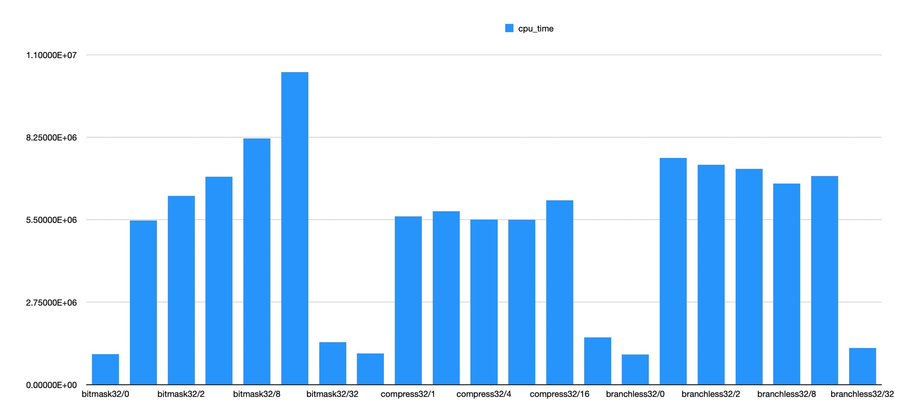
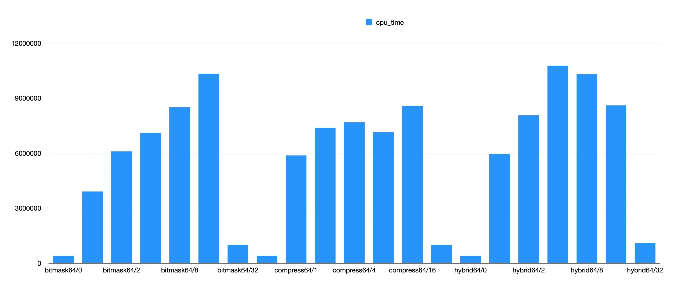

filter range实现优化
基本代码都来自于 StarRocks
benchmark代码放在 Github
所谓filter range就是类似下面这样的代码：
- 基于0/1数组来选择目标数组里面的元素
- 如果对应位置是1那么就选择，否则就丢弃
普通实现版本如下：
for (auto i = start_offset; i < to; ++i) { if (f_data[i]) { *(data + result_offset) = *(data + i); result_offset++; } }
在这个基础上，我们可以使用SIMD来做些优化：
- 一次性加载32个filter元素，每个元素是8bit，那么就是256bit. `__m256i f = _mm256_loadu_si256((const __m256i*)(f_data + start_offset));`
- 将这256bit压缩成为32bit的mask `uint32_t mask = _mm256_movemask_epi8(_mm256_cmpgt_epi8(f, all0));`
- 如果 `mask==0` 那么认为这32个元素都不用选择，就可以直接跳过
- 如果 `mask==0xffffffff` 那么认为这32个元素都可以选择，可以使用 `memmove` 挪动数据
- 如果都不满足，那么就要根据mask里面的bit来做选择了，这个可以使用类似 `__builtin_ctz` 和 `x & (x-1)` 来配合使用。
完整代码如下，这个 `phmap::priv::BitMask` 其实就是上面那个实现：
if (mask == 0) { // all no hit, pass } else if (mask == 0xffffffff) { // all hit, copy all memmove(data + result_offset, data + start_offset, kBatchNums * data_type_size); result_offset += kBatchNums; } else { #define BITMASK_COPY(mask) \ { \ phmap::priv::BitMask<uint32_t, 32> bitmask(mask); \ for (auto idx : bitmask) { \ *(data + result_offset++) = *(data + start_offset + idx); \ } \ } BITMASK_COPY(mask); }
下面所有的改进都是基于bitmask那个的改进，整个外层框架还是非常好的。
一个实现是branchless. 可以想得到这种实现，如果mask里面bits比较多的话，还是比较合算的。如果bits比较少的话，那么就有许多重复次的拷贝和运算。
#define BRANCHLESS_COPY() \ { \ int j = start_offset; \ for (int i = 0; i < 32; i++) { \ data[result_offset] = data[j]; \ result_offset += f_data[j]; \ j += 1; \ } \ }
另外一个实现则需要CPU支持AVX512F特性，具体来说就是用到这个指令： `_mm512_mask_compress_epi32` 和 `_mm512_mask_compress_epi64`. 这两个指令可以支持32bit/64bit的压缩。如果需要支持epi8/epi16压缩的话，那么就需要AVX512_VBMI(icelake)特性，我看了下我们开发机器还不支持。
#define AVX512_COPY(SHIFT, MASK, WIDTH) \ { \ auto m = (mask >> SHIFT) & MASK; \ if (m) { \ __m512i dst; \ __m512i src = _mm512_loadu_epi##WIDTH(data + start_offset + SHIFT); \ dst = _mm512_mask_compress_epi##WIDTH(dst, m, src); \ _mm512_storeu_epi##WIDTH(data + result_offset, dst); \ result_offset += __builtin_popcount(m); \ } \ }
如果要使用 intrinsic 的话，那么需要在编译参数里面增加 `-mavx512f`. 但是如果使用这个编译参数，如果代码里面使用了 `__AVX512F__` 的话那么就会生成avx512f代码。但是这里我们想根据运行时动态判断，这样的话可以使用内联汇编来搞，并且外部增加运行时CPU的特性判断。
#define AVX512_ASM_COPY(SHIFT, MASK, WIDTH, WIDTHX) \ { \ auto m = (mask >> SHIFT) & MASK; \ if (m) { \ T* src = data + start_offset + SHIFT; \ T* dst = data + result_offset; \ __asm__ volatile("vmovdqu" #WIDTH \ " (%[s]), %%zmm1\n" \ "kmovw %[mask], %%k1\n" \ "vpcompress" #WIDTHX \ " %%zmm1, %%zmm0%{%%k1%}%{z%}\n" \ "vmovdqu" #WIDTH " %%zmm0, (%[d])\n" \ : [ s ] "+r"(src), [ d ] "+r"(dst) \ : [ mask ] "r"(m) \ : "zmm0", "zmm1", "memory"); \ result_offset += __builtin_popcount(m); \ } \ }
运行时CPU特性判断可以参考 这里 的 `__builtin_cpu_supports` 函数（注意需要初始化调用 `__builtin_cpu_init` ，不过我测试了如果不调用好像也没有问题）
benchmark里面，我根据期望生成了不同的filter. 比如 `branchless/16` 就表示每个32个bit里面平均就有16个bit，想看看在不同的bitmask密度的情况下，各种实现的性能情况。
在8bit/16bit这个级别上，我对比了bitmask和branchless两个版本，有这个几个发现：
- 拷贝8bit和16bit上其实性能差别不大，16bit在bitmask版本略微高些，但是branchless差别不大。
- branchless只有在 `bits = 8` 的情况下面比bitmask好一点，在 `bits = 16` 的情况下面比bitmask好很多。
- 但是如果在这里增加一次判断的话，造成的额外开销会比较大。

在32bit/64bit级别上，则对比了3个版本，有这么几个发现：
- branchless和bitmask差别和上麦差不多，branchless只有在 `bits=16` 的时候才更好。
- 32bit上，似乎只有 `bits=1` 的情况会稍差写，其他情况都比bitmask好。
- 64bit上，似乎要满足 `bits>=8` 才会比bitmask好。

